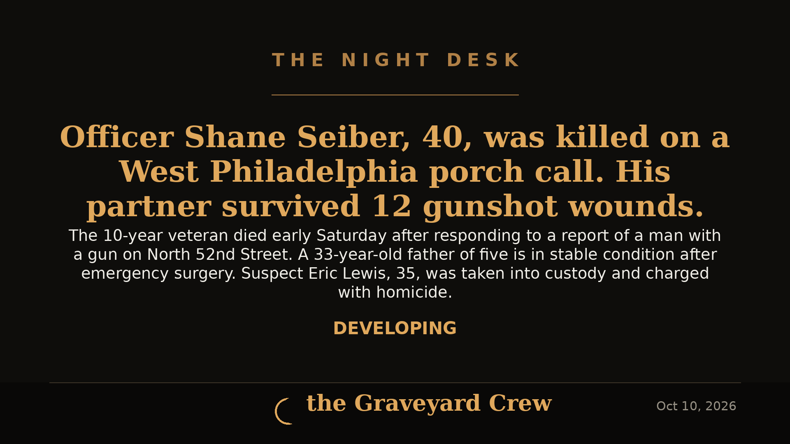

October 10, 2026
BREAKING: Philadelphia Officer Killed in Ambush, Second Officer Shot 12 Times

Headline card by The Night Desk
What we know
PHILADELPHIA — A Philadelphia police officer was shot and killed and a second officer was critically wounded early Saturday morning after the pair responded to a report of a man with a gun on the 100 block of North 52nd Street in West Philadelphia, police said.
Officer Shane Seiber, 40, a 10-year veteran of the Philadelphia Police Department, was shot three times after stepping onto a porch shortly after 12:20 a.m. He was taken to Penn Presbyterian Medical Center, where he died after surgery. Police Commissioner Kevin Bethel said Seiber's wife and family were by his side before he passed. Seiber is survived by his wife and two children — a 7-year-old boy and a 3-year-old girl.
The second officer, 33, a father of five, was shot 12 times and underwent emergency surgery. He is in stable condition, though Bethel noted he is "not out of the woods."
The suspect
Police say the gunman fled the scene after the initial shooting, firing at responding officers in a nearby alley — no additional officers were hit. He then climbed a tree to hide and eventually surrendered after SWAT units arrived. Investigators recovered three firearms: two handguns and a shotgun. One of the handguns belonged to an officer who had been shot.
Philadelphia District Attorney Larry Krasner said Saturday afternoon that Eric Lewis, 35, is being charged with homicide for Seiber's death, plus attempted homicide and other charges — including allegedly shooting at nine other officers who responded to the scene.
City responds
Gov. Josh Shapiro ordered flags to fly at half-staff in Seiber's honor. Mayor Cherelle Parker spoke at an early-morning press conference, noting the loss comes during an already difficult stretch for the city.
Developing
This story is developing. We'll update this article as charging details and funeral arrangements are announced.
The Night Desk will keep following this story. Rest in peace, Officer Seiber.
Source: CNN / Associated Press — read the original report
← Back to latest stories